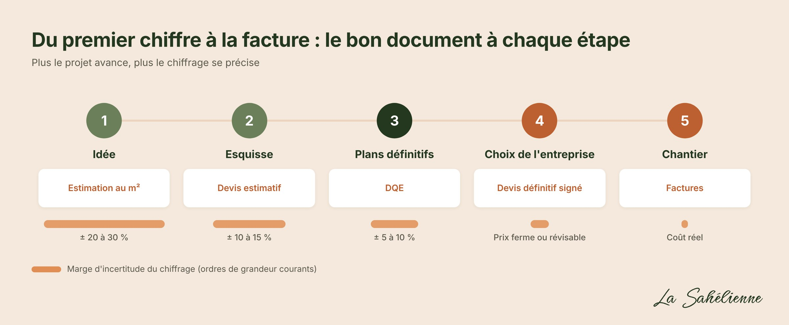
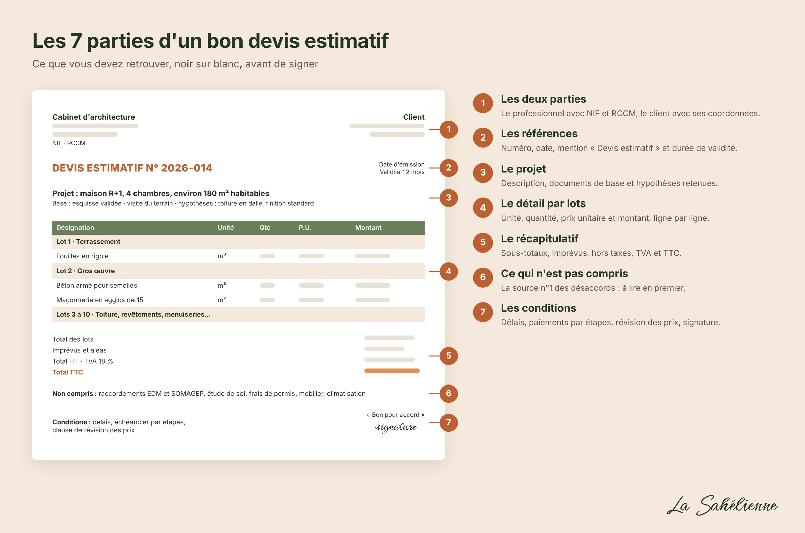
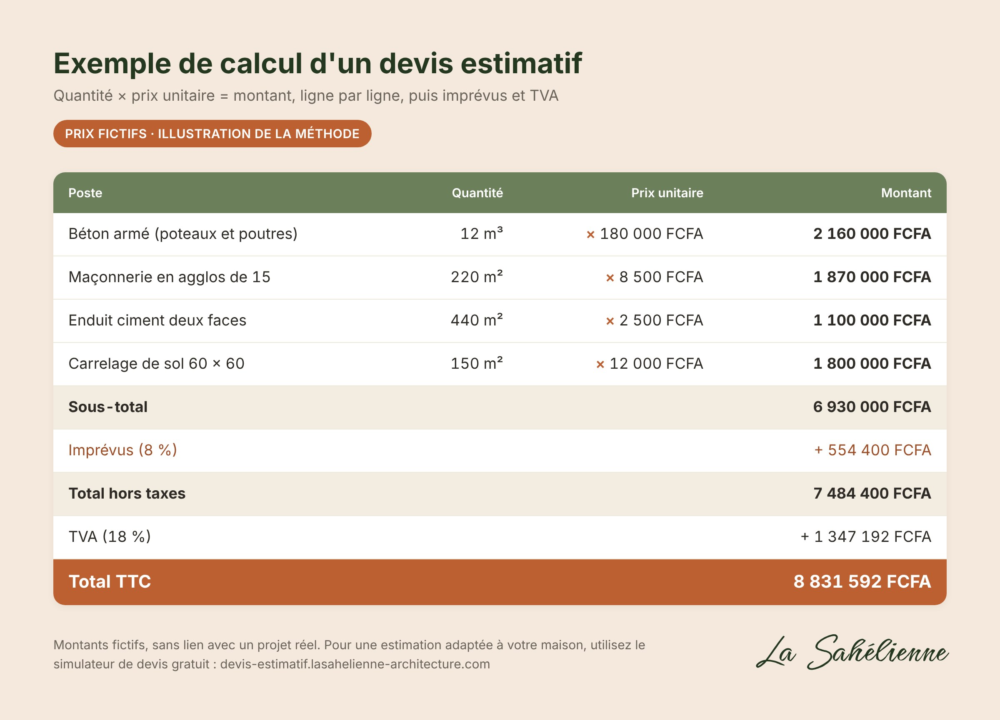
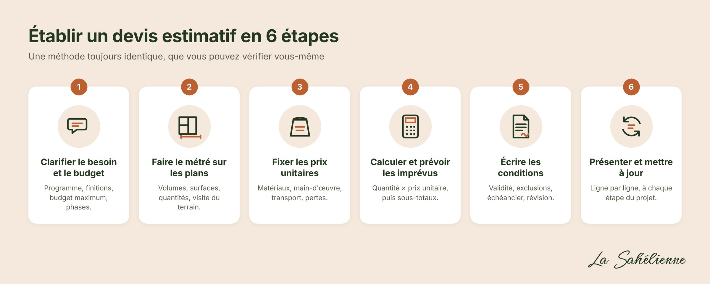
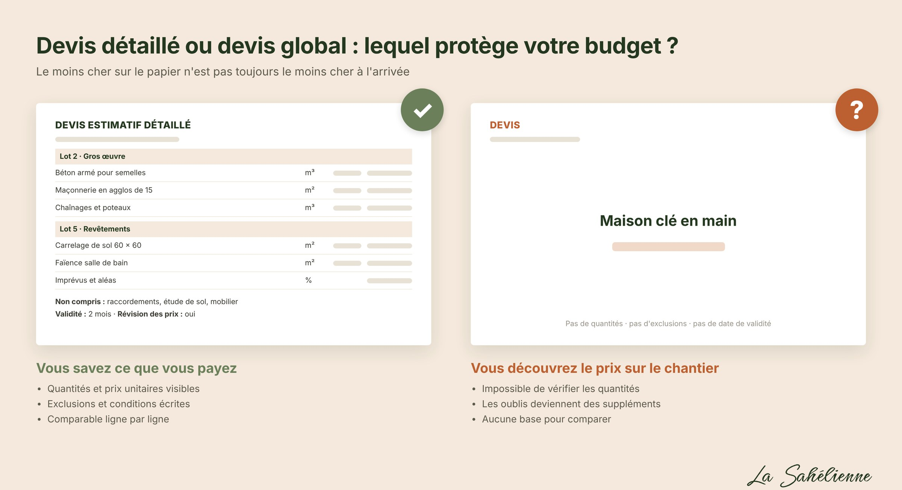
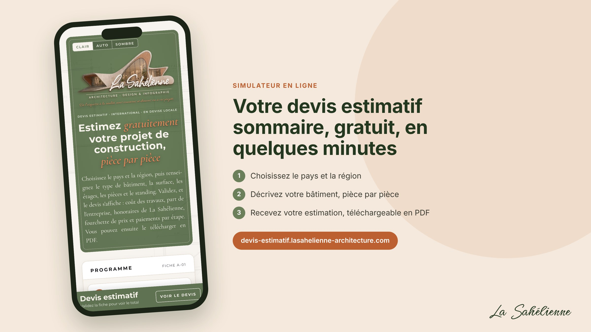

Vous avez un terrain, une idée de maison, et une question qui revient sans cesse : combien ça va coûter ? C'est souvent à ce moment que les projets déraillent. Un chiffre lancé au téléphone, un tableau griffonné sur un coin de cahier, un maçon qui promet de « finir avec ça »… puis les sacs de ciment qui manquent, le fer qui augmente, et un chantier qui s'arrête au niveau du chaînage.
Le devis estimatif sert à éviter ce scénario. Bien fait, il transforme une envie en budget clair, poste par poste, avant que le premier parpaing ne soit posé. Dans ce guide, nous vous expliquons ce qu'est un devis estimatif, ce qu'il doit contenir, comment il se calcule, et comment le lire pour comparer les offres sans vous faire piéger.
💡 Envie d'un premier chiffre tout de suite ? Notre simulateur de devis estimatif sommaire vous donne gratuitement un premier ordre de grandeur en quelques minutes. Gardez-le sous la main en lisant ce guide : vous saurez exactement comment l'affiner.
Un devis estimatif est un document qui chiffre un projet de construction avant que tous les détails soient arrêtés. Il découpe les travaux en postes (fondations, maçonnerie, toiture, électricité…), estime pour chacun une quantité, lui applique un prix unitaire, puis additionne le tout.
Son rôle est de vous donner une enveloppe budgétaire fiable pour décider : construire maintenant ou par phases, garder l'étage ou le reporter, choisir une dalle ou une toiture en tôle. Le mot important est « estimatif » : les quantités et les prix sont prévisionnels, et le montant final peut évoluer quand le projet se précise ou quand les prix du marché bougent.
À retenir : un devis estimatif répond à la question « combien prévoir ? ». Le devis définitif d'une entreprise répond à la question « combien je paie ? ». Les deux sont utiles, à des moments différents.
Sur un chantier, plusieurs documents chiffrés circulent, et on les confond facilement. Pourtant, ils ne disent pas la même chose et n'engagent pas de la même façon. Voici comment les distinguer, du plus approximatif au plus précis.
1. L'estimation au m². Elle intervient au stade de l'idée, avant tout plan : on multiplie la surface par un coût moyen au m². Sa précision tourne autour de ± 20 à 30 %, et elle n'engage personne.
2. Le devis estimatif. Il arrive avec l'esquisse ou l'avant-projet. On découpe le projet en postes, on estime les quantités et on applique des prix unitaires. Précision habituelle : ± 10 à 15 %. Il n'engage pas sur le prix, sauf clause contraire.
3. Le devis quantitatif et estimatif (DQE). Il s'établit sur les plans définitifs, avant de consulter les entreprises, à partir d'un métré précis. Précision : ± 5 à 10 %. Il sert de base commune pour comparer les offres, puis de référence au contrat.
4. La facture proforma. Souvent demandée par une banque ou avant un achat, elle donne le prix d'un fournisseur ou d'une entreprise à une date précise. Elle engage le vendeur pendant sa durée de validité, pas au-delà.
5. Le devis définitif (ou devis ferme). C'est l'offre de l'entreprise que vous choisissez, avec ses prix arrêtés pour des travaux décrits. Une fois signé par les deux parties, il engage, avec un prix ferme ou révisable selon ce que prévoit le contrat.
6. La facture. Elle arrive pendant et après les travaux, et porte sur ce qui a réellement été exécuté. C'est le montant que vous payez.
Les pourcentages de précision sont des ordres de grandeur couramment admis dans la profession ; ils varient selon la qualité des plans et la stabilité des prix.
Deux termes complètent ce vocabulaire. Le bordereau des prix unitaires (BPU) liste seulement les prix unitaires d'une entreprise (le m³ de béton, le m² de carrelage…), sans quantités. Le métré est le relevé des quantités sur les plans : c'est lui qui fait la qualité d'un devis. Un prix unitaire juste appliqué à une quantité fausse donne un total faux.

Un devis sérieux se reconnaît au premier coup d'œil : il est détaillé, daté, et il dit clairement ce qu'il comprend et ce qu'il ne comprend pas. Voici la liste complète des informations à y trouver.
1. L'identité des deux parties
2. Les références du document
3. Le projet
4. Le détail des travaux, poste par poste
C'est le cœur du devis. Chaque ligne indique la désignation, l'unité, la quantité, le prix unitaire et le montant. Les lignes sont regroupées par grands ensembles appelés lots :
5. Le récapitulatif financier
6. Ce qui n'est pas compris
La partie la plus souvent oubliée, et la source n°1 des disputes. Exemples : raccordement EDM et SOMAGEP, étude de sol, frais de permis de construire, mobilier, climatisation, clôture, forage. Un poste absent du devis se paie plus tard, sur le chantier, et souvent au prix fort.
7. Les conditions

Un bon devis ne sort pas d'un chiffre au hasard. Il suit une méthode, toujours la même, que vous pouvez vérifier vous-même.
Étape 1. Clarifier le besoin et le budget
Tout commence par une conversation. Combien de chambres ? Un étage tout de suite ou plus tard ? Quel niveau de finition ? Quel budget maximum, et faut-il construire en une fois ou par phases ? Plus ces réponses sont précises, plus le devis sera juste. À ce stade, une estimation au m² suffit pour savoir si le projet est réaliste : c'est exactement ce que fait notre simulateur de devis estimatif sommaire.
Étape 2. Partir des plans et faire le métré
Sur l'esquisse ou les plans, on mesure tout : volumes de terre à creuser, m³ de béton, m² de murs, de carrelage, de peinture, nombre de portes et de prises. C'est l'étape la plus longue et la plus importante. Une visite du terrain la complète : pente, nature du sol, accès des camions, présence d'un réseau d'eau et d'électricité. Lorsque c'est possible, une étude de sol vient compléter le tout : sans elle, les fondations restent la plus grande inconnue du devis.
Étape 3. Fixer les prix unitaires
Chaque prix unitaire additionne le coût des matériaux, de la main-d'œuvre, du matériel et du transport. C'est ce qu'on appelle le déboursé sec. On lui applique ensuite un coefficient qui couvre les frais de chantier, les frais généraux, les aléas et la marge de l'entreprise : on obtient alors le prix de vente. Les prix doivent venir du marché local et dater de moins de quelques semaines : le prix du sac de ciment ou de la tonne de fer peut varier sensiblement d'un mois à l'autre.
⚠️ L'oubli classique : les pertes. On commande toujours un peu plus que la quantité théorique, car des agglos se cassent, du carrelage est découpé, du béton reste dans la bétonnière. Un devis qui ignore les pertes et le transport du sable et du gravier sera toujours dépassé.
Étape 4. Calculer, additionner, prévoir les imprévus
Pour chaque ligne : quantité × prix unitaire = montant. On additionne les lignes par lot, puis les lots entre eux, et on ajoute la ligne d'imprévus.
L'image ci-dessous montre un extrait de calcul, ligne par ligne : quatre postes de gros œuvre et de finitions, leur sous-total, la ligne d'imprévus, puis la TVA. Les prix y sont fictifs et servent uniquement à illustrer la méthode.

Remarquez l'avantage de ce découpage : si vous choisissez un carrelage moins cher, seule une ligne change, et vous voyez immédiatement l'économie réalisée.
Étape 5. Écrire les conditions
Validité du devis, exclusions, délais, échéancier de paiement, clause de révision des prix. Ces quelques lignes pèsent autant que les chiffres, car ce sont elles qu'on relit le jour où un désaccord apparaît.
Étape 6. Présenter, expliquer, mettre à jour
Un devis estimatif se commente, ligne par ligne, avec le client. Il se met ensuite à jour à chaque étape du projet : après l'esquisse, après les plans définitifs, avant la consultation des entreprises. Un devis qui n'a pas bougé entre l'idée de départ et le début du chantier est un devis qu'on n'a pas retravaillé.

Demander deux ou trois devis est une très bonne habitude. Encore faut-il les comparer correctement. Le devis le moins cher au départ peut se révéler le plus coûteux à l'arrivée.

Une estimation donnée au téléphone ou sur un message vocal n'a pratiquement aucune valeur : rien ne prouve ce qui a été promis. Exigez toujours un devis écrit et daté.
Une fois signé par le client avec la mention « Bon pour accord », et accepté par le professionnel, un devis devient un engagement pour les deux parties, sur ce qui y est écrit. C'est pour cela que deux mentions comptent autant :
Sans ces deux mentions, un devis estimatif signé peut être lu comme un prix ferme, ce qui expose le professionnel. Avec elles, il reste un budget de référence, ce qui expose le client à des hausses s'il ne surveille pas. Dans les deux cas, la règle d'or est la même : tout travail en plus, tout changement de matériau, doit faire l'objet d'un accord écrit et chiffré avant d'être réalisé. Un simple devis complémentaire signé suffit. Pour un projet important, faites relire le contrat par un juriste.
Vous voulez décliner un devis ? Un message court et courtois suffit : « Bonjour, merci pour votre devis et le temps consacré à notre projet. Nous avons choisi une autre proposition pour cette fois. Au plaisir de travailler ensemble sur un prochain projet. » Un professionnel sérieux l'appréciera.
Plusieurs acteurs peuvent chiffrer votre projet, et chacun a sa place. L'important est de savoir ce que vous obtenez.
Il existe de nombreux cabinets et professionnels sérieux. Le bon choix est celui qui vous remet un document détaillé, qui accepte de l'expliquer, et qui reste joignable quand le chantier commence.
Chez La Sahélienne, le devis estimatif fait partie de la conception. C'est l'outil qui permet à votre maison d'exister dans les limites de votre budget.
Et parce que chaque projet commence par une question simple, nous avons créé un simulateur de devis estimatif sommaire : quelques informations sur votre projet, et vous obtenez un devis estimatif sommaire, entièrement gratuit. Quand vous voudrez passer à un devis estimatif détaillé sur vos plans, parlons de votre projet.
Un outil construit sur des données réelles. Ce simulateur est le fruit de plusieurs mois de travail. Nous l'avons nourri de données collectées au fil de notre expérience sur les projets, de références relevées sur le marché, de nos recherches et d'études sur la construction, puis nous l'avons affiné pas à pas. Chaque estimation s'appuie sur cette base. Elle reste sommaire, puisqu'elle ne voit ni votre terrain ni vos plans. Elle sert à décider et à cadrer un budget, et ne remplace en aucun cas le devis estimatif détaillé qu'un architecte établit sur vos plans.

Un devis estimatif est-il gratuit ? Une première estimation l'est généralement. Chez La Sahélienne, le devis estimatif sommaire est entièrement gratuit, directement sur notre simulateur. Un devis estimatif détaillé, établi à partir d'un métré sur plans, demande plusieurs heures de travail : selon les professionnels, il est facturé à part ou inclus dans la mission de l'architecte. Dans tous les cas, cela doit vous être annoncé avant.
D'où viennent les estimations du simulateur ? De plusieurs mois de travail de La Sahélienne. Le simulateur a été nourri de données réelles : notre expérience sur les projets, des références du marché, nos recherches et des études sur la construction. Il donne une estimation sommaire, que le devis estimatif détaillé affine ensuite sur vos plans.
Combien coûte la construction d'une maison au m² au Mali ? Tout dépend du terrain, du nombre de niveaux, du type de toiture et du niveau de finition : entre une maison simple et une villa haut de gamme, le coût au m² peut plus que doubler. Pour un ordre de grandeur adapté à votre projet, utilisez notre simulateur.
Quel écart est normal entre le devis estimatif et le coût final ? Avec des plans définitifs et un métré sérieux, l'écart reste en général de l'ordre de 5 à 10 %. Au-delà, chaque dépassement doit pouvoir être expliqué ligne par ligne : quantité sous-estimée, changement de matériau, hausse des prix.
Que se passe-t-il si le prix du ciment ou du fer augmente ? C'est la clause de révision qui répond. Pour vous protéger, vous pouvez aussi acheter tôt les matériaux qui se stockent bien, comme le fer, ou fixer les prix lot par lot avec l'entreprise. Le ciment, lui, se conserve mal : quelques semaines au sec, pas davantage.
Peut-on construire par phases ? Oui, et c'est très courant. Le devis est alors découpé par phases (fondations et rez-de-chaussée, puis étage, puis finitions). Pensez dès le départ aux attentes pour l'étage : fers en attente protégés de la rouille, fondations et poteaux dimensionnés dès le départ pour porter l'étage.
Combien de temps un devis est-il valable ? Généralement 1 à 3 mois. Passé ce délai, demandez une actualisation plutôt que de vous fier à un chiffre ancien.
La banque me demande une proforma, est-ce la même chose ? Pas tout à fait. La proforma est un document de prix à une date donnée, émis par un vendeur ou une entreprise. Le devis estimatif de l'architecte sert souvent à la préparer et à vérifier que les montants demandés sont cohérents.
Un devis estimatif bien fait est la meilleure assurance de votre projet. Il vous dit combien prévoir, poste par poste, avant de dépenser le premier franc. Exigez-le écrit, détaillé, daté, avec ses exclusions et ses conditions. Comparez les quantités avant les prix. Et faites-le vivre jusqu'au chantier.
Prêt à chiffrer votre maison ? Commencez par un devis estimatif sommaire gratuit avec notre simulateur en ligne, puis contactez La Sahélienne pour un devis estimatif détaillé sur vos plans.
Article rédigé par Fatoumata Sidibé, architecte, La Sahélienne.